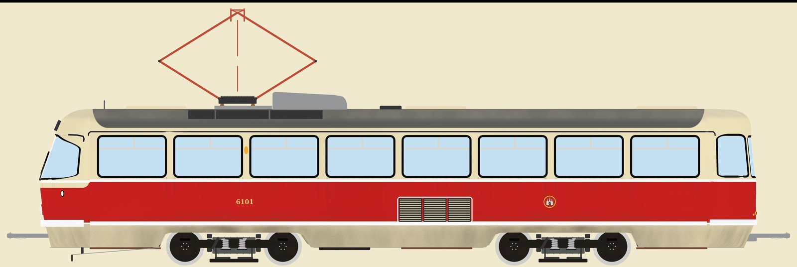
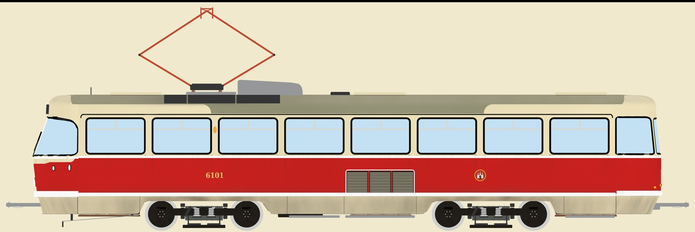

Every feature measured the same way on the drawing and on a flat-colour render of the model, in millimetres: along the car from its centre (+ towards the front, which is on the left in these views) and up from the top of rail.


Drawing scale from its own dimensions: the bogie centres 6,400 mm apart give 6.0 mm per pixel, and the body ends and coupler heads then fall exactly on ±7,000 and ±7,600 mm. The scan is turned by 0.08° (the ground line and the wire drop 3–4 px across the sheet), so it is levelled first. The rail top is the top of the ground line. Both images are mirrored for measuring, so that the same code serves both sides. The model is rendered orthographically at 2 mm per pixel with flat colours. Wheel and bogie positions are not measured: they follow the given dimensions (6,400 / 1,900 mm) exactly. Both are reduced to the same colour classes, and edges of thin outlined items (beading, strip, gutter, seams) are taken at the centre of their outline strokes. Deviation = model − drawing.
| Feature | Drawing | Before | Dev. | After | Dev. |
|---|---|---|---|---|---|
| Passenger windows | |||||
| window 1 front edge | 5 815 | 5 822 | 7 | 5 804 | -11 |
| window 1 rear edge | 4 547 | 4 542 | -5 | 4 540 | -7 |
| window 1 top | 2 476 | 2 480 | 4 | 2 480 | 4 |
| window 1 bottom | 1 723 | 1 726 | 3 | 1 726 | 3 |
| window 1 sash bar | 2 279 | 2 266 | -13 | 2 266 | -13 |
| window 1 vent bar centre from rear edge | 625 | 600 | -25 | 622 | -3 |
| window 2 front edge | 4 338 | 4 342 | 4 | 4 328 | -10 |
| window 2 rear edge | 3 076 | 3 064 | -12 | 3 062 | -14 |
| window 2 top | 2 476 | 2 480 | 4 | 2 480 | 4 |
| window 2 bottom | 1 717 | 1 726 | 9 | 1 726 | 9 |
| window 2 sash bar | 2 279 | 2 266 | -13 | 2 266 | -13 |
| window 2 vent bar centre from rear edge | 625 | 599 | -26 | 626 | 1 |
| window 3 front edge | 2 861 | 2 862 | 1 | 2 850 | -11 |
| window 3 rear edge | 1 598 | 1 582 | -16 | 1 584 | -14 |
| window 3 top | 2 476 | 2 480 | 4 | 2 480 | 4 |
| window 3 bottom | 1 717 | 1 726 | 9 | 1 726 | 9 |
| window 3 sash bar | 2 273 | 2 266 | -7 | 2 266 | -7 |
| window 3 vent bar centre from rear edge | 625 | 600 | -25 | 626 | 1 |
| window 4 front edge | 1 383 | 1 380 | -3 | 1 372 | -11 |
| window 4 rear edge | 115 | 102 | -13 | 106 | -9 |
| window 4 top | 2 476 | 2 480 | 4 | 2 480 | 4 |
| window 4 bottom | 1 717 | 1 726 | 9 | 1 726 | 9 |
| window 4 sash bar | 2 273 | 2 266 | -7 | 2 266 | -7 |
| window 4 vent bar centre from rear edge | 622 | 598 | -24 | 625 | 3 |
| window 5 front edge | -100 | -102 | -2 | -106 | -6 |
| window 5 rear edge | -1 362 | -1 380 | -18 | -1 372 | -10 |
| window 5 top | 2 476 | 2 480 | 4 | 2 480 | 4 |
| window 5 bottom | 1 717 | 1 726 | 9 | 1 726 | 9 |
| window 5 sash bar | 2 279 | 2 266 | -13 | 2 266 | -13 |
| window 5 vent bar centre from rear edge | 628 | 600 | -28 | 625 | -3 |
| window 6 front edge | -1 578 | -1 582 | -4 | -1 584 | -6 |
| window 6 rear edge | -2 852 | -2 862 | -10 | -2 850 | 2 |
| window 6 top | 2 476 | 2 480 | 4 | 2 480 | 4 |
| window 6 bottom | 1 717 | 1 726 | 9 | 1 726 | 9 |
| window 6 sash bar | 2 273 | 2 266 | -7 | 2 266 | -7 |
| window 6 vent bar centre from rear edge | 628 | 600 | -28 | 625 | -3 |
| window 7 front edge | -3 061 | -3 064 | -3 | -3 062 | -1 |
| window 7 rear edge | -4 329 | -4 342 | -13 | -4 328 | 1 |
| window 7 top | 2 476 | 2 480 | 4 | 2 480 | 4 |
| window 7 bottom | 1 717 | 1 726 | 9 | 1 726 | 9 |
| window 7 sash bar | 2 279 | 2 266 | -13 | 2 266 | -13 |
| window 7 vent bar centre from rear edge | 622 | 599 | -23 | 624 | 2 |
| window 8 front edge | -4 538 | -4 544 | -6 | -4 540 | -2 |
| window 8 rear edge | -5 806 | -5 824 | -18 | -5 806 | 0 |
| window 8 top | 2 482 | 2 480 | -2 | 2 480 | -2 |
| window 8 bottom | 1 717 | 1 726 | 9 | 1 726 | 9 |
| window 8 sash bar | 2 279 | 2 266 | -13 | 2 266 | -13 |
| window 8 vent bar centre from rear edge | 631 | 600 | -31 | 624 | -7 |
| Cab and rear corner windows | |||||
| cab window rear edge at y 2.05 | 6 031 | 6 230 | 199 | 6 030 | -1 |
| cab window rear edge at y 1.85 | 6 043 | 6 248 | 205 | 6 032 | -11 |
| cab window rear edge at y 2.30 | 6 054 | 6 258 | 204 | 6 054 | 0 |
| cab window top at x 6.10 | 2 369 | – | – | 2 380 | 11 |
| cab window bottom at x 6.10 The windscreen and the cab side window are one opening; the front elevation puts its bottom at 1,682 mm, which the model keeps. The side elevation draws it ~20-30 mm higher. | 1 717 | – | – | 1 698 | -19 |
| cab window top at x 6.30 | 2 458 | 2 324 | -134 | 2 444 | -14 |
| cab window bottom at x 6.30 As above. | 1 711 | 1 734 | 23 | 1 690 | -21 |
| cab window top at x 6.50 | 2 488 | 2 408 | -80 | 2 470 | -18 |
| cab window bottom at x 6.50 As above. | 1 717 | 1 692 | -25 | 1 686 | -31 |
| rear corner window front edge | -5 998 | -6 218 | -220 | -6 006 | -8 |
| rear corner window rear edge | -6 775 | -6 762 | 13 | -6 790 | -15 |
| rear corner window top at x -6.10 | 2 500 | – | – | 2 504 | 4 |
| rear corner window bottom at x -6.10 | 1 711 | – | – | 1 714 | 3 |
| rear corner window top at x -6.45 | 2 500 | 2 504 | 4 | 2 504 | 4 |
| rear corner window bottom at x -6.45 | 1 711 | 1 730 | 19 | 1 714 | 3 |
| Beading, strip and gutter | |||||
| beading top at x -6.6 | 1 648 | 1 656 | 8 | 1 656 | 8 |
| beading bottom at x -6.6 | 1 600 | 1 608 | 8 | 1 608 | 8 |
| strip top at x -6.6 | 861 | 876 | 15 | 876 | 15 |
| strip bottom at x -6.6 Rear bumper section. The right elevation puts it at 763 mm, exactly where the model has it; the left draws it 16 mm lower. | 748 | 764 | 16 | 764 | 16 |
| beading top at x -4.4 | 1 645 | 1 656 | 11 | 1 656 | 11 |
| beading bottom at x -4.4 | 1 594 | 1 608 | 14 | 1 608 | 14 |
| strip top at x -4.4 | 825 | 838 | 13 | 832 | 7 |
| strip bottom at x -4.4 | 745 | 762 | 17 | 754 | 9 |
| beading top at x -2.9 | 1 645 | 1 656 | 11 | 1 656 | 11 |
| beading bottom at x -2.9 | 1 594 | 1 608 | 14 | 1 608 | 14 |
| strip top at x -2.9 | 825 | 838 | 13 | 832 | 7 |
| strip bottom at x -2.9 | 745 | 762 | 17 | 754 | 9 |
| beading top at x +1.5 | 1 645 | 1 656 | 11 | 1 656 | 11 |
| beading bottom at x +1.5 | 1 594 | 1 608 | 14 | 1 608 | 14 |
| strip top at x +1.5 | 825 | 838 | 13 | 832 | 7 |
| strip bottom at x +1.5 | 742 | 762 | 20 | 754 | 12 |
| beading top at x +3.0 | 1 645 | 1 656 | 11 | 1 656 | 11 |
| beading bottom at x +3.0 | 1 594 | 1 608 | 14 | 1 608 | 14 |
| strip top at x +3.0 | 825 | 838 | 13 | 832 | 7 |
| strip bottom at x +3.0 | 742 | 762 | 20 | 754 | 12 |
| beading top at x +5.2 | 1 645 | 1 656 | 11 | 1 656 | 11 |
| beading bottom at x +5.2 | 1 597 | 1 608 | 11 | 1 608 | 11 |
| strip top at x +5.2 | 825 | 838 | 13 | 832 | 7 |
| strip bottom at x +5.2 | 745 | 762 | 17 | 754 | 9 |
| beading top at x +6.5 | 1 645 | 1 638 | -7 | 1 638 | -7 |
| beading bottom at x +6.5 | 1 600 | 1 592 | -8 | 1 592 | -8 |
| strip top at x +6.5 | 861 | 868 | 7 | 868 | 7 |
| strip bottom at x +6.5 | 748 | 734 | -14 | 734 | -14 |
| thick strip front section, rear end | 6 012 | 6 124 | 112 | 6 004 | -8 |
| thick strip rear section, front end | -5 996 | -6 056 | -60 | -6 004 | -8 |
| gutter at x -5.0 | 2 593 | 2 584 | -9 | 2 584 | -9 |
| gutter at x -2.2 | 2 593 | 2 584 | -9 | 2 584 | -9 |
| gutter at x +1.6 | 2 593 | 2 584 | -9 | 2 584 | -9 |
| gutter at x +4.4 | 2 593 | 2 585 | -8 | 2 585 | -8 |
| gutter front hook x | 5 935 | 6 022 | 87 | 5 937 | 2 |
| gutter rear hook x | -5 902 | -6 149 | -247 | -5 902 | 0 |
| Roof colour | |||||
| roof colour lower edge at x -6.0 | 2 823 | 2 800 | -23 | 2 816 | -7 |
| roof colour lower edge at x -5.0 | 2 823 | 2 658 | -165 | 2 814 | -9 |
| roof colour lower edge at x -4.2 | 2 823 | 2 658 | -165 | 2 814 | -9 |
| roof colour lower edge at x -2.0 | 2 608 | 2 658 | 50 | 2 606 | -2 |
| roof colour lower edge at x +0.6 | 2 608 | 2 658 | 50 | 2 606 | -2 |
| roof colour lower edge at x +2.4 | 2 614 | 2 658 | 44 | 2 606 | -8 |
| roof colour lower edge at x +4.6 | 2 811 | 2 658 | -153 | 2 814 | 3 |
| roof colour lower edge at x +5.6 | 2 817 | 2 658 | -159 | 2 814 | -3 |
| cream side band front part, rear end (y 2.72) | 3 082 | 5 810 | 2 728 | 3 072 | -10 |
| cream side band rear part, front end (y 2.72) | -3 073 | -5 810 | -2 737 | -3 072 | 1 |
| roof colour rear end (y 2.90) | -6 171 | – | – | -6 166 | 5 |
| roof colour front end (y 2.90) | 6 174 | – | – | 6 166 | -8 |
| Roof equipment and pantograph | |||||
| roof edge boxes rear end | 1 503 | 1 478 | -25 | 1 506 | 3 |
| roof edge boxes front end | 4 090 | 4 090 | 0 | 4 090 | 0 |
| roof edge boxes joint 1 | 2 489 | 2 509 | 20 | 2 489 | 0 |
| roof edge boxes joint 2 | 3 573 | 3 561 | -12 | 3 573 | 0 |
| roof edge box top at x 3.85 | 3 038 | 3 004 | -34 | 3 026 | -12 |
| roof edge box bottom at x 3.85 | 2 823 | 2 832 | 9 | 2 834 | 11 |
| roof cover rear end | 1 018 | 1 006 | -12 | 1 006 | -12 |
| roof cover front end | 2 454 | 2 450 | -4 | 2 450 | -4 |
| roof cover top | 3 355 | 3 348 | -7 | 3 348 | -7 |
| pantograph platform rear end | 2 487 | 2 460 | – | 2 484 | -3 |
| pantograph platform front end | 3 611 | 3 580 | – | 3 600 | -11 |
| pantograph rear knee x | 1 616 | 1 584 | -32 | 1 610 | -6 |
| pantograph front knee x | 4 673 | 4 676 | 3 | 4 666 | -7 |
| pantograph centre x | 3 145 | 3 130 | -15 | 3 138 | -7 |
| pantograph rear knee y | 3 915 | 3 961 | 46 | 3 921 | 6 |
| pantograph front knee y | 3 915 | 3 961 | 46 | 3 921 | 6 |
| pantograph: pixels inside the diamond on the centre line Count of model pixels inside the diamond on its centre line (the drawing has only a dotted guide line there). | 0 | 3 848 | 3 848 | 0 | 0 |
| roof hatch front rear | 4 152 | 4 132 | -20 | 4 144 | -8 |
| roof hatch front front | 5 289 | 5 294 | 5 | 5 294 | 5 |
| roof hatch middle rear | -1 290 | -1 316 | -26 | -1 304 | -14 |
| roof hatch middle front | -142 | -144 | -2 | -144 | -2 |
| roof hatch rear rear | -5 776 | -5 802 | -26 | -5 790 | -14 |
| roof hatch rear front | -4 628 | -4 630 | -2 | -4 630 | -2 |
| roof vent cap rear | -52 | -58 | -6 | -50 | 2 |
| roof vent cap front | 384 | 362 | -22 | 376 | -8 |
| Grille, number, badge and lamps | |||||
| grille rear edge | -1 500 | -1 440 | 60 | -1 500 | 0 |
| grille front edge | 55 | 26 | -29 | 46 | -9 |
| grille top | 1 358 | 1 320 | -38 | 1 350 | -8 |
| grille bottom | 801 | 800 | -1 | 800 | -1 |
| fleet number centre x | 2 965 | 2 991 | 26 | 2 962 | -3 |
| fleet number height | 132 | 94 | -38 | 124 | -8 |
| fleet number centre y | 1 217 | 1 222 | 5 | 1 223 | 6 |
| coat of arms centre x | -2 956 | -2 941 | 15 | -2 961 | -5 |
| coat of arms centre y | 1 226 | 1 221 | -5 | 1 221 | -5 |
| coat of arms diameter | 251 | 240 | -11 | 260 | 9 |
| indicator between windows 2 and 3 x | 2 969 | 2 962 | -7 | 2 955 | -14 |
| indicator between windows 2 and 3 y | 2 240 | 2 226 | -14 | 2 241 | 1 |
| rear amber light x | -6 902 | -6 930 | -28 | -6 908 | -6 |
| rear amber light y | 958 | 990 | 32 | 971 | 13 |
| side marker x | 6 203 | – | – | 6 202 | -1 |
| side marker y | 1 386 | – | – | 1 396 | 10 |
| Skirt, seams and underframe | |||||
| skirt bottom at x -6.4 | 365 | 332 | -33 | 354 | -11 |
| skirt bottom at x -5.6 | 359 | 332 | -27 | 354 | -5 |
| skirt bottom at x -0.4 | 359 | 332 | -27 | 354 | -5 |
| skirt bottom at x +1.0 | 359 | 332 | -27 | 354 | -5 |
| skirt bottom at x +5.4 | 359 | 332 | -27 | 354 | -5 |
| skirt seam near x +6.04 | 6 019 | – | – | 6 019 | 0 |
| skirt seam near x +4.63 | 4 631 | – | – | 4 632 | 1 |
| skirt seam near x +1.33 | 1 344 | – | – | 1 345 | 1 |
| skirt seam near x +0.07 | 76 | – | – | 76 | 0 |
| skirt seam near x -1.55 | -1 536 | – | – | -1 535 | 1 |
| skirt seam near x -4.85 | -4 828 | – | – | -4 829 | -1 |
| skirt seam near x -6.02 | -5 989 | – | – | -5 989 | 0 |
| grey box under skirt, rear, rear end | -5 962 | – | – | -5 960 | 2 |
| grey box under skirt, rear, front end | -4 861 | – | – | -4 860 | 1 |
| grey box under skirt, middle, rear end | -1 506 | – | – | -1 500 | 6 |
| grey box under skirt, middle, front end | 49 | – | – | 50 | 1 |
| grey box under skirt, front, rear end | 175 | – | – | 174 | -1 |
| grey box under skirt, front, front end | 1 305 | – | – | 1 304 | -1 |
| front cream stripe bottom at x 6.2 | 1 507 | 1 492 | -15 | 1 516 | 9 |
| front cream stripe bottom at x 6.6 | 1 507 | 1 492 | -15 | 1 516 | 9 |
| front cream stripe rear end (y 1.575) | 6 090 | 6 026 | -64 | 6 092 | 2 |
| Body outline and couplers | |||||
| rear end at y 2.90 | -6 829 | -6 762 | 67 | -6 834 | -5 |
| front end at y 2.90 | 6 623 | 6 468 | -155 | 6 634 | 11 |
| rear end at y 2.60 | -6 901 | -6 854 | 47 | -6 888 | 13 |
| front end at y 2.60 | 6 712 | 6 658 | -54 | 6 726 | 14 |
| rear end at y 2.30 | -6 901 | -6 866 | 35 | -6 902 | -1 |
| front end at y 2.30 Profile of the leaning windscreen. Both side elevations put it further back than a straight lean allows; the front elevation sets the windscreen itself. | 6 736 | 6 746 | 10 | 6 772 | 36 |
| rear end at y 2.00 | -6 943 | -6 898 | 45 | -6 936 | 7 |
| front end at y 2.00 As above. | 6 898 | 6 884 | -14 | 6 914 | 16 |
| rear end at y 1.45 | -6 991 | -6 956 | 35 | -6 996 | -5 |
| front end at y 1.45 | 7 000 | 6 964 | -36 | 6 998 | -2 |
| rear end at y 1.20 Between the rear lamps; the drawing has a small notch here. | -6 967 | -6 950 | 17 | -6 990 | -23 |
| front end at y 1.20 | 6 976 | 6 934 | -42 | 6 970 | -6 |
| rear end at y 0.95 | -6 997 | -6 950 | 47 | -6 990 | 7 |
| front end at y 0.95 | 6 940 | 6 904 | -36 | 6 940 | 0 |
| rear end at y 0.80 | -7 020 | -6 978 | 42 | -7 018 | 2 |
| front end at y 0.80 Front bumper: its depth comes from the front elevation. | 7 017 | 6 962 | -55 | 6 996 | -21 |
| rear end at y 0.40 The right elevation draws the rear skirt 75 mm shorter than the left; the model sits between them. | -6 823 | -6 750 | 73 | -6 790 | 33 |
| front end at y 0.40 Skirt lobes under the bumper, set by the front elevation. | 6 820 | 6 770 | -50 | 6 804 | -16 |
| rear coupler tip x | -7 613 | -7 616 | -3 | -7 616 | -3 |
| rear coupler centre y | 559 | 561 | 2 | 561 | 2 |
| front coupler tip x | 7 616 | 7 616 | 0 | 7 616 | 0 |
| front coupler centre y | 562 | 561 | -1 | 561 | -1 |